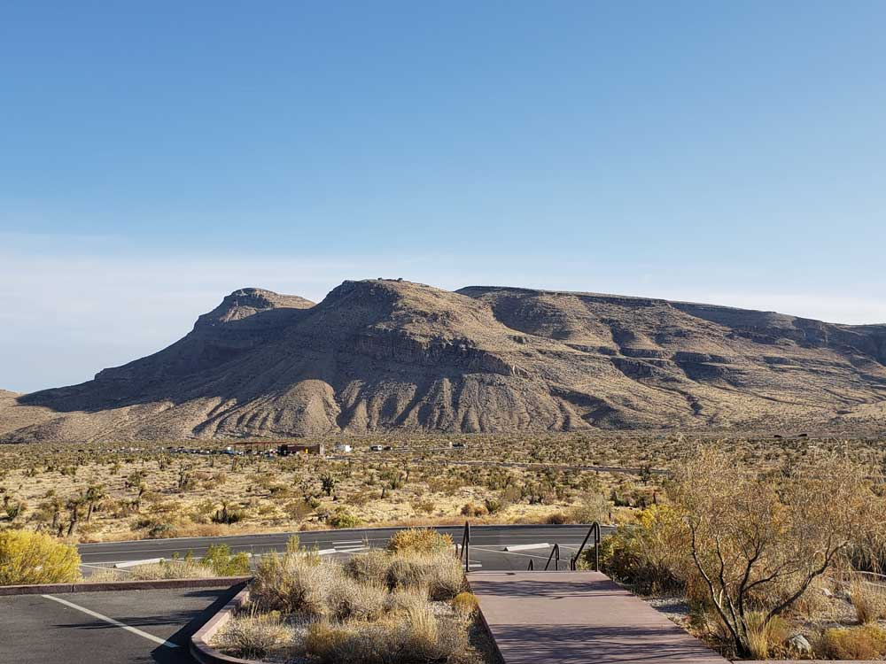
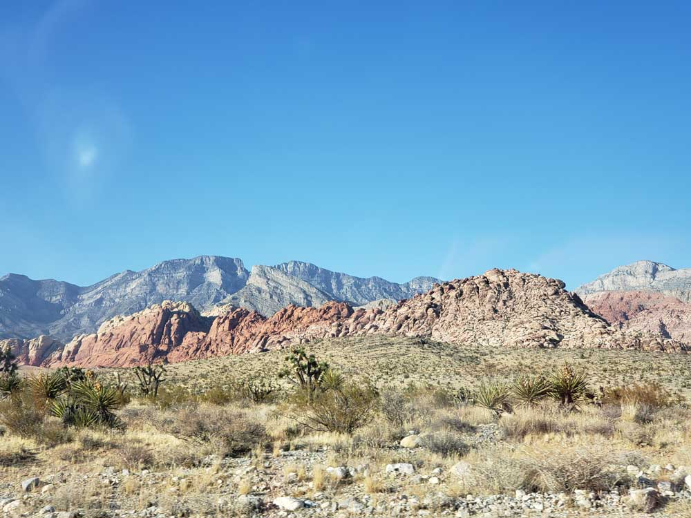
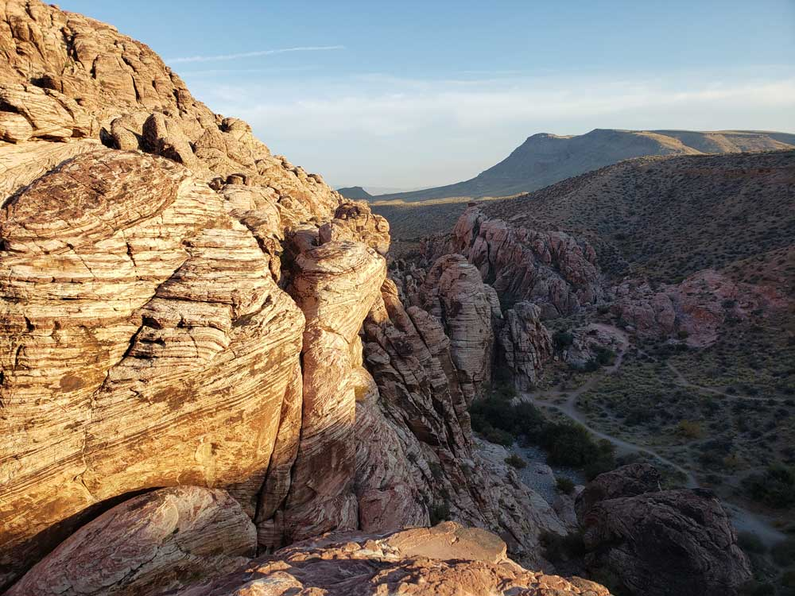
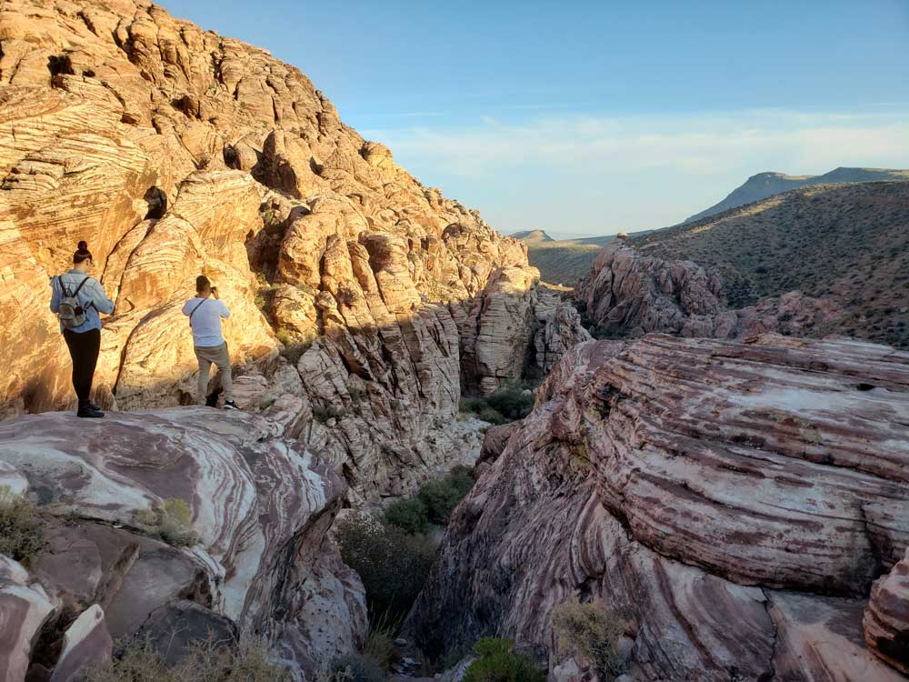
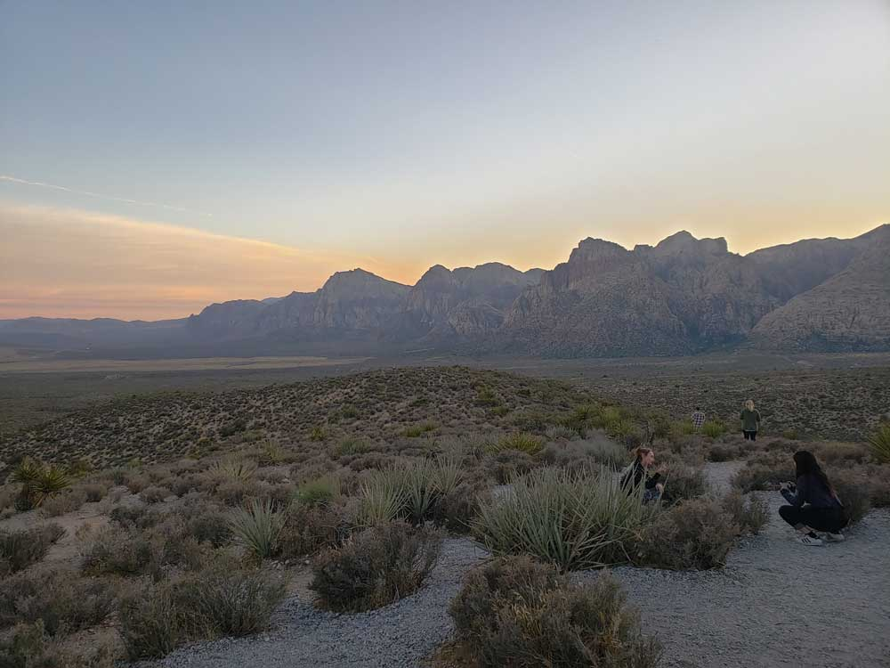

Scenic desert conservation area featuring towering red sandstone cliffs, hiking trails, rock climbing, and a 13-mile one-way scenic drive.
General Information
Visitor Center: Daily 8am to 4:30pm
Motorcycle: $10
Individual (bike/hike): $8
Annual Pass: $50
Timed Entry Reservation required October 1 – May 31
How to Get There
From Las Vegas (17 mi): Take Charleston Blvd (NV-159) west from downtown Las Vegas directly to the entrance of Red Rock Canyon.
Overview
Red Rock Canyon National Conservation Area is a spectacular desert landscape of towering red, tan and cream sandstone cliffs just west of Las Vegas, managed by the Bureau of Land Management. The area was designated a national conservation area in 1990 to protect its geology, wildlife and cultural resources, including ancient rock art and the colorful Keystone Thrust Fault. Its 13-mile Scenic Drive, Calico Hills and Wilson Cliffs make it one of the most beautiful and accessible natural areas in the Southwest. People come for hiking, rock climbing, photography, scenic driving, cycling and the chance to escape the Strip for a few hours of open desert.
Access
Red Rock Canyon is about 17 miles west of downtown Las Vegas, making it among the easiest natural areas in the country to reach from a major city. Most visitors drive west on Charleston Boulevard (NV-159) and enter the 13-mile Scenic Drive, which is a one-way loop with trailheads and overlooks. A timed-entry reservation is required for the Scenic Drive during much of the year, so plan ahead and check the official website. Many visitors also cycle the loop, and there is no public transportation into the conservation area.
Seasons
Red Rock Canyon is open year-round, but hours and entry rules change with the seasons. Spring and fall are the best times to visit, with warm days and cool nights ideal for hiking and climbing. Summer is very hot, so hikes should be done at sunrise, and the Scenic Drive opens earlier and closes later during longer days. Winter is mild, though occasional snow or ice on the higher parts of the loop can bring closures. Thunderstorms can cause flash floods in the canyons, and the Scenic Drive may close temporarily in severe weather. A timed-entry reservation system is in place for the Scenic Drive from October through May.
Things to Do
Drive the 13-Mile Scenic Loop
The one-way Scenic Drive circles the heart of the conservation area and passes viewpoints of Calico Hills, Sandstone Quarry, Keystone Thrust and the Wilson Cliffs. Frequent pullouts make it easy to stop for photos and short walks.
Hike Canyons and Peaks
More than 30 miles of trails explore the area, from short walks to scenic canyons and strenuous climbs to high peaks. Popular destinations include Ice Box Canyon, Calico Tanks and Turtlehead Peak.
Go Rock Climbing
Red Rock is world-famous for rock climbing, with routes ranging from beginner to expert on the large sandstone walls. Climbers from around the world come for classic multi-pitch routes such as those in Black Velvet Canyon.
See Petroglyphs and Cultural Sites
Evidence of ancient people includes rock art, agave roasting pits and other archaeological features. Interpretive signs and ranger programs explain the human history of the area.
Watch for Wildlife
Desert bighorn sheep, wild burros, desert tortoises, lizards and birds live in the area. Early morning and evening are the best times to look for wildlife while respecting a safe distance.
Top Trails
Calico Tanks Trail
Length: Approximately 2.5 miles round trip
Elevation Gain: Approximately 450 feet
Difficulty: Moderate
This trail climbs through red and tan sandstone to natural rock basins that collect rainwater and provide a view toward Las Vegas. It includes some easy scrambling and is popular for its scenery and short length.
Ice Box Canyon Trail
Length: Approximately 2.6 miles round trip
Elevation Gain: Approximately 500 feet
Difficulty: Moderate
This trail leads into a shaded, narrow canyon with boulder hopping and a seasonal waterfall at the end. It is a cooler option in the warm months, and it can be slippery after rain.
Turtlehead Peak Trail
Length: Approximately 2.3 miles round trip
Elevation Gain: Approximately 1,000 feet
Difficulty: Moderate to Strenuous
A steady climb reaches the summit of Turtlehead Peak, which offers sweeping views over Red Rock Canyon, the Las Vegas Valley and the Spring Mountains. The trail is exposed, so bring water and start early.
Lost Creek - Children's Discovery Trail
Length: Approximately 0.7 miles round trip
Elevation Gain: Minimal
Difficulty: Easy
This short, family-friendly trail passes through a small canyon to a seasonal waterfall and includes interpretive signs about the desert environment. It is an easy introduction to Red Rock's scenery.
Visitor Centers
The Red Rock Canyon Visitor Center sits just before the Scenic Drive entrance and is the best first stop. It has exhibits on the area's geology, plants, animals and human history, a park film, a bookstore and gift shop, restrooms and a viewing patio with views of the cliffs. Rangers can provide trail maps, climbing and weather information, and details about the timed-entry system. The center is typically open daily during the day, and hours may change seasonally.
Camping and Lodging
The Red Rock Canyon Campground, a short distance east of the Scenic Drive entrance on NV-159, offers tent and RV sites with fire rings, picnic tables and restrooms, and it is typically reservable in advance through Recreation.gov. There is no lodging within the conservation area. Close by, Summerlin and western Las Vegas have a wide range of hotels, including Red Rock Casino Resort and Spa and chain hotels, and the Las Vegas Strip is only about 25 minutes away with its large resorts. For a quieter option, the small community of Blue Diamond is nearby, and Mount Charleston, about 45 minutes away, has mountain lodges and cabins. Check each property's website for current availability.
This article uses material from the Wikipedia article and official pages for Red Rock Canyon National Conservation Area, Bureau of Land Management Nevada, released under the Creative Commons Attribution-Share-Alike License 3.0.
Featured Locations and Trails

Dough4872, CC BY-SA 4.0, via Wikimedia Commons; Image Size Adjusted

Calico Tanks
Short sandstone hike featuring colorful rock formations, light scrambling, and a natural water basin with sweeping desert and city views.
Popular moderate hike through colorful sandstone leading to a natural water basin overlook
Dough4872, CC BY-SA 4.0, via Wikimedia Commons; Image Size Adjusted
Ice Box Canyon
Cool canyon hike through narrow limestone walls featuring seasonal waterfalls, shaded corridors, and a dramatic boulder-filled gorge.
Cool canyon hike through narrow limestone walls featuring seasonal waterfalls, shaded corridors, and a dramatic boulder-filled gorge.
Dough4872, CC BY-SA 4.0, via Wikimedia Commons; Image Size Adjusted
Lost Creek Trail
Short shaded nature trail featuring seasonal waterfalls, riparian vegetation, and a child-friendly path through a desert wash and hidden canyon corridor.
Family-friendly trail featuring seasonal waterfalls, shaded areas, and ancient petroglyphs
Dough4872, CC BY-SA 4.0, via Wikimedia Commons; Image Size Adjusted
Red Rock Scenic Loop
13 miles, minimal elevation
One-way scenic drive with multiple overlooks showcasing dramatic red sandstone cliffs
Red Rock Scenic Loop
One-way scenic drive winding through towering red rock formations with panoramic desert vistas, trail access points, and multiple scenic overlooks.
Popular moderate hike through colorful sandstone leading to a natural water basin overlook
Dough4872, CC BY-SA 4.0, via Wikimedia Commons; Image Size Adjusted
Turtlehead Peak
Strenuous summit hike featuring steep switchbacks, desert terrain, and expansive panoramic views from one of the highest peaks in the area.
Challenging summit hike with steep climbs and panoramic views over the canyon and surrounding desert




